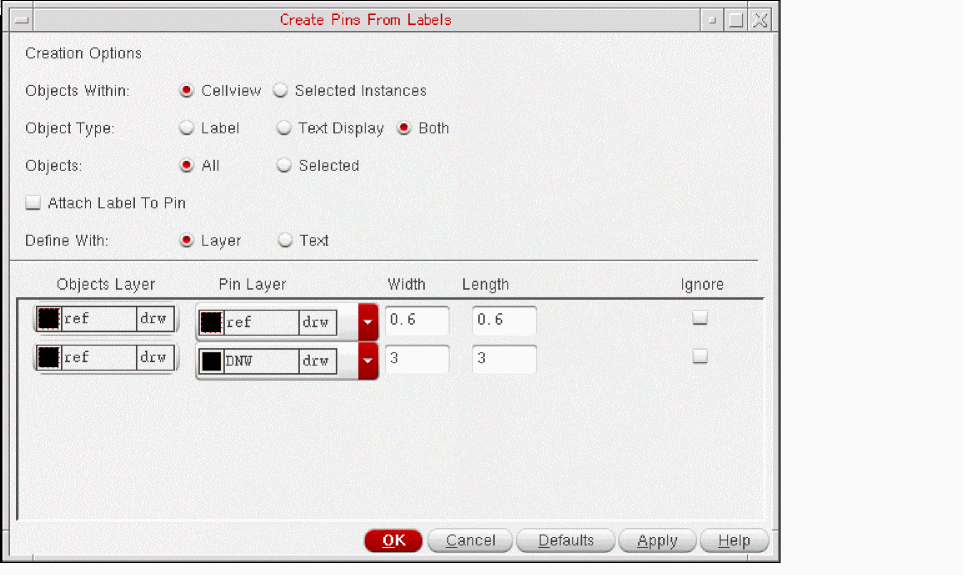

Creating Pins from Labels
You can create pins from labels and text displays in your layout cellview by using the Create Pins From Labels command. You can specify the pin dimensions and the layer on which each pin is created. The generated pins are centered on the origin of the label or text display from which they are derived and have terminal names matching those on the corresponding labels or text displays.
If the text label contains a colon (:), then the colon and trailing text are dropped from the name of the generated pin. For example, for the text label VDD:P,28, the pin name is generated as VDD.
If a pin already exists for a selected label or text display, no new label is created for that object. The pin and the object are not attached to each other. If you move the pin, the corresponding label or text display do not follow. You can choose to attach an object to the pin.
To create a pin from a label or text display:
- In the layout canvas, select the labels or text displays from which you want to create pins.
-
Choose Tools – Create Pins From Labels.
The Create Pins From Labels form opens.
 - Use Objects Within to specify whether to create pins at the top level of the cellview or within selected instances.
- Use Object Type to specify whether to create pins from Label, Text Displays, or Both.
- Use Objects to specify whether to create pins for all the objects of the specified type or only those that are currently selected.
- Select Attach Label to Pin to attach a label to the pin.
- From Define With, choose whether you want to define pin details using layer or text.
-
From Pin Layer, choose the layer on which each pin is to be created.
If you selected labels on more than one layer, choose the appropriate pin layer for each label layer from the list of available layers. - Type the Width and Length of pins you require.
-
Click OK or Apply.
The pins are created and placed at the center of the labels on the canvas.
Related Topics
Parent-Child Relationship Between Objects
Return to top